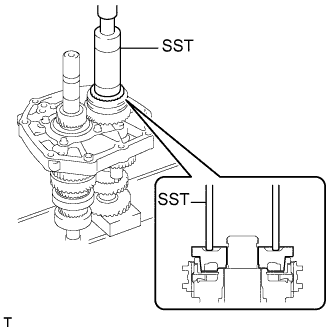

БЛОК МЕХАНИЧЕСКОЙ ТРАНСМИССИИ > ПОВТОРНАЯ СБОРКА |
| 1. УСТАНОВИТЕ ВЫХОДНОЙ ВАЛ |
Смажьте трансмиссионным маслом скользящую часть выходного вала.
С помощью молотка с пластмассовым покрытием установите выходной вал, подбивая промежуточную пластину.
| 2. УСТАНОВИТЕ ПРУЖИННОЕ СТОПОРНОЕ КОЛЬЦО ВАЛА ПОДШИПНИКА ВЫХОДНОГО ВАЛА (со стороны центрального подшипника) |
 |
С помощью съемника стопорных колец установите пружинное стопорное кольцо вала на центральный подшипник.
| 3. УСТАНОВИТЕ ПЕРВИЧНЫЙ ВАЛ |
Нанесите на первичный вал и блокирующее кольцо синхронизатора № 2 трансмиссионное масло и установите их на выходной вал.
| 4. УСТАНОВИТЕ ЗАДАЮЩУЮ ШЕСТЕРНЮ |
Установите задающую шестерню на промежуточную пластину.
| 5. УСТАНОВИТЕ ЦЕНТРАЛЬНЫЙ ПОДШИПНИК ПРОМЕЖУТОЧНОГО ВАЛА |
С помощью SST и молотка запрессуйте новый центральный подшипник в промежуточную пластину.
| 6. УСТАНОВИТЕ ПРОМЕЖУТОЧНУЮ ШЕСТЕРНЮ ЗАДНЕГО ХОДА В СБОРЕ |
Нанесите трансмиссионное масло на скользящие части промежуточной шестерни заднего хода и вала промежуточной шестерни заднего хода, а затем установите промежуточную шестерню заднего хода и вал промежуточной шестерни заднего хода на промежуточную пластину.
| 7. УСТАНОВИТЕ СЕПАРАТОР ЗАДНЕГО ПОДШИПНИКА ВЫХОДНОГО ВАЛА |
Вставьте выступ сепаратора подшипника в канавку промежуточной шестерни заднего хода. Затем закрепите сепаратор подшипника 4 болтами.
| 8. УСТАНОВИТЕ ШТИФТ УПОРНОЙ ШАЙБЫ ШЕСТЕРНИ 5-Й ПЕРЕДАЧИ |
Нанесите универсальную консистентную смазку на штифт шайбы и вставьте его в задающую шестерню.
| 9. УСТАНОВИТЕ УПОРНУЮ ШАЙБУ ШЕСТЕРНИ 5-Й ПЕРЕДАЧИ |
 |
Нанесите трансмиссионное масло на упорную шайбу и установите ее на задающую шестерню.
| 10. УСТАНОВИТЕ СКОЛЬЗЯЩУЮ МУФТУ ТРАНСМИССИИ № 3 |
Нанесите трансмиссионное масло на скользящую часть скользящей муфты трансмиссии № 3 и установите ее на задающую шестерню 5-й передачи.
| *1 | Пружина сухаря механизма синхронизации № 3 |
| *2 | Сухарь механизма синхронизации № 3 |
| *3 | Скользящая муфта трансмиссии № 3 |
| *4 | Задающая шестерня 5-й передачи |
Установите 2 сухаря механизма синхронизации № 3 и 2 пружины сухарей механизма синхронизации № 3 на задающую шестерню 5-й передачи.
С помощью съемника стопорных колец установите пружинное стопорное кольцо на задающую шестерню 5-й передачи.
| 11. УСТАНОВИТЕ ПОДШИПНИК ЗАДАЮЩЕЙ ШЕСТЕРНИ 5-Й ПЕРЕДАЧИ |
Нанесите трансмиссионное масло на подшипник и установите его на задающую шестерню 5-й передачи.
| 12. УСТАНОВИТЕ ЗАДАЮЩУЮ ШЕСТЕРНЮ 5-Й ПЕРЕДАЧИ |
Нанесите трансмиссионное масло на шестерню 5-й передачи и скользящую муфту трансмиссии № 3 и установите шестерню 5-й передачи на задающую шестерню.
| 13. УСТАНОВИТЕ БЛОКИРУЮЩЕЕ КОЛЬЦО ВНЕШНЕГО СИНХРОНИЗАТОРА № 3 |
 |
Нанесите на блокирующее кольцо синхронизатора № 3 трансмиссионное масло и установите его на задающую шестерню.
| 14. УСТАНОВИТЕ ШЛИЦЕВУЮ ЧАСТЬ ШЕСТЕРНИ № 5 |
|  |
С помощью SST и пресса запрессуйте шлицевую часть шестерни в задающую шестерню.
| 15. УСТАНОВИТЕ ЗАДНЕЕ ПРУЖИННОЕ СТОПОРНОЕ КОЛЬЦО ВАЛА ЗАДАЮЩЕЙ ШЕСТЕРНИ |
Выберите такое пружинное стопорное кольцо, чтобы осевой зазор между шлицевой частью шестерни № 5 и пружинным стопорным кольцом соответствовал заданному.
| Метка | Толщина |
| А | 2,80 - 2,85 мм (0,1102 - 0,1122 дюйма) |
| B | 2,85 - 2,90 мм (0,1122 - 0,1141 дюйма) |
| C | 2,90 - 2,95 мм (0,1141 - 0,1160 дюйма) |
| D | 2,95 - 3,00 мм (0,1160 - 0,1181 дюйма) |
| E | 3,00 - 3,05 мм (0,1181 - 0,1200 дюйма) |
| F | 3,05 - 3,10 мм (0,1200 - 0,1220 дюйма) |
| G | 3,10 - 3,15 мм (0,1220 - 0,1240 дюйма) |
Закрепите промежуточную пластину в тисках между алюминиевыми пластинами.
С помощью латунного стержня и молотка установите пружинное стопорное кольцо.
| 16. ПРОВЕРЬТЕ ОСЕВОЙ ЗАЗОР ЗАДАЮЩЕЙ ШЕСТЕРНИ 5-Й ПЕРЕДАЧИ |
С помощью комплекта плоских щупов измерьте осевой зазор.
| 17. ПРОВЕРЬТЕ РАДИАЛЬНЫЙ ЗАЗОР ЗАДАЮЩЕЙ ШЕСТЕРНИ 5-Й ПЕРЕДАЧИ |
 |
С помощью индикатора часового типа измерьте радиальный зазор.
| 18. УСТАНОВИТЕ ЗАДНИЙ ПОДШИПНИК ВЫХОДНОГО ВАЛА |
С помощью SST и пресса запрессуйте распорную втулку и новый задний подшипник на выходной вал.
| 19. УСТАНОВИТЕ ПРУЖИННОЕ СТОПОРНОЕ КОЛЬЦО ВАЛА ПОДШИПНИКА ВЫХОДНОГО ВАЛА (со стороны заднего подшипника) |
Выберите такое пружинное стопорное кольцо вала, чтобы осевой зазор между валом подшипника выходного вала и пружинным стопорным кольцом соответствовал заданному.
| Метка | Толщина | Метка | Толщина |
| А | 2,65 - 2,70 мм (0,1043 - 0,1063 дюйма) | K | 3,10 - 3,15 мм (0,1220 - 0,1240 дюйма) |
| B | 2,70 - 2,75 мм (0,1063 - 0,1083 дюйма) | L | 3,15 - 3,20 мм (0,1240 - 0,1260 дюйма) |
| C | 2,75 - 2,80 мм (0,1083 - 0,1102 дюйма) | M | 3,20 - 3,25 мм (0,1260 - 0,1280 дюйма) |
| D | 2,80 - 2,85 мм (0,1102 - 0,1122 дюйма) | N | 3,25 - 3,30 мм (0,1280 - 0,1299 дюйма) |
| E | 2,85 - 2,90 мм (0,1122 - 0,1141 дюйма) | P | 3,30 - 3,35 мм (0,1299 - 0,1319 дюйма) |
| F | 2,90 - 2,95 мм (0,1141 - 0,1160 дюйма) | Q | 3,35 - 3,40 мм (0,1319 - 0,1339 дюйма) |
| G | 2,95 - 3,00 мм (0,1160 - 0,1181 дюйма) | R | 3,40 - 3,45 мм (0,1339 - 0,1358 дюйма) |
| H | 3,00 - 3,05 мм (0,1181 - 0,1200 дюйма) | S | 3,45 - 3,50 мм (0,1358 - 0,1378 дюйма) |
| J | 3,05 - 3,10 мм (0,1200 - 0,1220 дюйма) | - | - |
С помощью латунного стержня и молотка установите пружинное стопорное кольцо.
| 20. УСТАНОВИТЕ КРОНШТЕЙН РЫЧАГА ВКЛЮЧЕНИЯ ПЕРЕДАЧИ ЗАДНЕГО ХОДА |
 |
Закрепите кронштейн рычага на промежуточной пластине 2 болтами.
| 21. УСТАНОВИТЕ ВИЛКУ ВКЛЮЧЕНИЯ ПЕРЕДАЧИ ЗАДНЕГО ХОДА |
Установите рычаг переключения передач на вилку переключения передач. Установите новое разрезное уплотнение с помощью отвертки и молотка.
Установите вилку включения передачи заднего хода с рычагом включения передачи заднего хода на промежуточную пластину.
| 22. УСТАНОВИТЕ СТЕРЖЕНЬ ВИЛКИ ПЕРЕКЛЮЧЕНИЯ ПЕРЕДАЧ № 4 |
 |
Установите пружину сжатия и шариковый фиксатор вилки включения передачи заднего хода на вилку включения передачи заднего хода.
Смажьте трансмиссионным маслом скользящую часть стержня вилки переключения передач № 4.
Установите стержень вилки переключения передач № 4, слегка прижав шариковый фиксатор вилки включения передачи заднего хода с помощью отвертки.
С помощью молотка и латунного стержня вбейте пружинное стопорное кольцо на стержень вилки переключения передач № 4.
| 23. УСТАНОВИТЕ СТЕРЖЕНЬ ВИЛКИ ПЕРЕКЛЮЧЕНИЯ ПЕРЕДАЧ № 3 |
Установите шариковый фиксатор вилки включения передачи заднего хода на вилку включения передачи заднего хода.
Установите ролик блокировки переключения передач № 1 в промежуточную пластину.
 |
Установите вилку переключения передач № 3 на скользящую муфту трансмиссии № 3, а стержень вилки переключения передач № 3 – на промежуточную пластину с передней стороны.
С помощью латунного стержня и молотка вбейте пружинное стопорное кольцо на стержень вилки переключения передач.
Используя бородок с тонким цилиндрическим концом 5 мм и молоток, вбейте разрезной пружинный штифт вилки переключения передач в вилку переключения передач № 3.
| 24. УСТАНОВИТЕ СТЕРЖЕНЬ ВИЛКИ ПЕРЕКЛЮЧЕНИЯ ПЕРЕДАЧ № 1 |
 |
Установите ролик блокировки переключения передач № 1 в промежуточную пластину.
Установите вилку переключения передач № 1 на шестерню передачи заднего хода.
 |
Установите стержень вилки переключения передач № 1 в промежуточную пластину с задней стороны.
 |
Закрепите вилку переключения передач № 1 новым болтом.
С помощью латунного стержня и молотка установите пружинное стопорное кольцо на стержень вилки переключения передач № 1.
| 25. УСТАНОВИТЕ СТЕРЖЕНЬ ВИЛКИ ПЕРЕКЛЮЧЕНИЯ ПЕРЕДАЧ № 2 |
Установите штифт блокировки переключения передач и ролик блокировки переключения передач № 1 в промежуточную пластину.
 |
Установите вилку переключения передач № 2 в скользящую муфту трансмиссии № 2.
Нанесите трансмиссионное масло на стержень вилки переключения передач № 2 и установите ее в промежуточную пластину с задней стороны.
 |
Вверните новый болт крепления вилки переключения передач в вилку переключения передач № 2.
С помощью молотка и латунного стержня вбейте пружинное стопорное кольцо на стержень вилки переключения передач № 2.
| 26. УСТАНОВИТЕ ГНЕЗДО ПРУЖИНЫ ШАРИКОВОГО ФИКСАТОРА ПЕРЕКЛЮЧЕНИЯ ПЕРЕДАЧ № 1 |
 |
Установите 2 шариковых фиксатора переключения передач и 2 пружины сжатия в промежуточную пластину.
Нанесите герметик на 2-3 витка резьбы 2 седел пружин.
 |
Установите 2 седла пружин на промежуточную пластину с помощью торцевого ключа с головкой "TORX" T40.
 |
Установите в промежуточную пластину шариковый фиксатор и нижнюю пружину сжатия.
Нанесите герметик на 2-3 витка резьбы седла пружины.
Установите седло пружины на промежуточную пластину с помощью торцевого ключа с головкой "TORX" T40.
| 27. УСТАНОВИТЕ МАГНИТ ТРАНСМИССИИ |
Очистите магнит трансмиссии и установите его на промежуточную пластину.
| 28. УСТАНОВИТЕ КАРТЕР МЕХАНИЧЕСКОЙ ТРАНСМИССИИ |
Нанесите герметик на картер механической трансмиссии, как показано на рисунке.
| *1 | Герметик |
Установите картер трансмиссии на деревянные бруски.
С помощью молотка с пластмассовым покрытием подбейте промежуточную пластину, чтобы установить картер трансмиссии.
| 29. УСТАНОВИТЕ ПРУЖИННОЕ СТОПОРНОЕ КОЛЬЦО ПЕРЕДНЕГО ПОДШИПНИКА ЗАДАЮЩЕЙ ШЕСТЕРНИ № 1 |
 |
С помощью съемника стопорных колец установите пружинное стопорное кольцо на передний подшипник задающей шестерни.
| 30. УСТАНОВИТЕ ПРУЖИННОЕ СТОПОРНОЕ КОЛЬЦО ВАЛА ПЕРЕДНЕГО ПОДШИПНИКА |
С помощью съемника стопорных колец установите пружинное стопорное кольцо на передний подшипник первичного вала.
| 31. УСТАНОВИТЕ САЛЬНИК СЕПАРАТОРА ПЕРЕДНЕГО ПОДШИПНИКА ТРАНСМИССИИ |
С помощью SST и молотка запрессуйте новый сальник в сепаратор переднего подшипника.
Нанесите на рабочую кромку сальника небольшое количество универсальной консистентной смазки.
| 32. УСТАНОВИТЕ СЕПАРАТОР ПЕРЕДНЕГО ПОДШИПНИКА |
 |
Нанесите герметик на сепаратор подшипника, как показано на рисунке.
| *1 | Герметик |
 |
Закрепите сепаратор переднего подшипника на картере трансмиссии 8 болтами.
Убедитесь, что первичный вал и выходной вал вращаются плавно.
| 33. УСТАНОВИТЕ САЛЬНИК ПЕРЕХОДНИКА РАЗДАТОЧНОЙ КОРОБКИ |
С помощью SST и молотка запрессуйте новый сальник в переходник раздаточной коробки.
Нанесите на рабочую кромку сальника небольшое количество универсальной консистентной смазки.
| 34. УСТАНОВИТЕ ШТИФТ БЛОКИРОВКИ ВКЛЮЧЕНИЯ ПЕРЕДАЧИ ЗАДНЕГО ХОДА В СБОРЕ |
 |
Установите штифт блокировки в переходник раздаточной коробки.
 |
Используя бородок с тонким цилиндрическим концом диаметром 5 мм и молоток, вбейте разрезной пружинный штифт в переходник раздаточной коробки.
 |
Установите пробку штифта блокировки включения передачи заднего хода в переходник раздаточной коробки с помощью торцевого ключа с головкой "TORX" T40.
| 35. УСТАНОВИТЕ МАСЛОПРИЕМНУЮ ТРУБКУ РАЗДАТОЧНОЙ КОРОБКИ |
 |
Установите маслоприемную трубку на переходник раздаточной коробки.
| 36. УСТАНОВИТЕ ПЕРЕХОДНИК РАЗДАТОЧНОЙ КОРОБКИ |
Нанесите герметик на переходник раздаточной коробки, как показано на рисунке.
| *1 | Герметик |
С помощью молотка с пластмассовым покрытием подбейте переходник раздаточной коробки, чтобы присоединить его к картеру механической трансмиссии.
Закрепите переходник раздаточной коробки на картере механической трансмиссии 10 болтами.
| 37. УСТАНОВИТЕ РЫЧАГ ВЫБОРА И ПЕРЕКЛЮЧЕНИЯ ПЕРЕДАЧ |
Установите рычаг выбора и переключения передач с кожухом рычага переключения передач на переходник раздаточной коробки.
Вверните болт в кожух рычага переключения передач.
| 38. УСТАНОВИТЕ ДЕРЖАТЕЛЬ НАПОЛЬНОГО РЫЧАГА ПЕРЕКЛЮЧЕНИЯ ПЕРЕДАЧ В СБОРЕ |
Закрепите держатель рычага переключения передач и новую прокладку 4 болтами.
| 39. УСТАНОВИТЕ ШТИФТ БЛОКИРОВКИ |
Установите 2 штифта блокировки.
| 40. УСТАНОВИТЕ ВЫКЛЮЧАТЕЛЬ СВЕТА ЗАДНЕГО ХОДА В СБОРЕ |
С помощью SST установите новую прокладку и выключатель света заднего хода на картер механической трансмиссии.
| 41. УСТАНОВИТЕ КАРТЕР СЦЕПЛЕНИЯ |
Временно закрепите картер сцепления 7 болтами A.
Нанесите герметик на 2 болта B.
Наживите 2 болта B.
Затяните 9 болтов.
| 42. УСТАНОВИТЕ ОПОРУ ВИЛКИ ВЫКЛЮЧЕНИЯ СЦЕПЛЕНИЯ |
Установите опору вилки выключения сцепления в блок механической трансмиссии.
| 43. УСТАНОВИТЕ ПОДШИПНИК ВЫКЛЮЧЕНИЯ СЦЕПЛЕНИЯ В СБОРЕ |
Смажьте подшипник выключения сцепления смазкой для муфты выключения сцепления и закрепите его на вилке выключения сцепления фиксатором.
| *1 | Смазка для ступицы выключения сцепления |
| 44. УСТАНОВИТЕ ВИЛКУ ВЫКЛЮЧЕНИЯ СЦЕПЛЕНИЯ В СБОРЕ |
Установите вилку выключения сцепления.
Нанесите консистентную смазку для шлицевого соединения сцепления на шлицы первичного вала.
| *1 | Смазка для шлицевого соединения сцепления |
| 45. УСТАНОВИТЕ ЧЕХОЛ ВИЛКИ ВЫКЛЮЧЕНИЯ СЦЕПЛЕНИЯ |
Установите чехол вилки выключения сцепления на картер сцепления.
| 46. УСТАНОВИТЕ ПРОБКУ СЛИВНОГО ОТВЕРСТИЯ |
Установите новую прокладку и пробку сливного отверстия на картер механической трансмиссии.
| 47. УСТАНОВИТЕ ПРОБКУ НАЛИВНОГО ОТВЕРСТИЯ МЕХАНИЧЕСКОЙ ТРАНСМИССИИ |
Установите на картер механической трансмиссии новую прокладку и пробку наливного отверстия.